Análisis de interacciones sectoriales¶
Introducción¶
A partir de los conflictos identificados en el territorio como resultado de los talleres participativos, el objetivo principal del análisis de interacciones sectoriales del estado de Yucatán es el de representar las relaciones existentes entre los 16 sectores claves en el estado (Tabla 1), así como determinar los sectores que son fuertemente más afectados por otros sectores y los que tienen mayor influencia.
| Id sector | Sector |
|---|---|
| 1 | Acuacultura de agua dulce |
| 2 | Acuacultura salobre |
| 3 | Agricultura tecnificada |
| 4 | Apicultura |
| 5 | Conservación |
| 6 | Energía |
| 7 | Forestal |
| 8 | Industrial |
| 9 | Milpa maya |
| 10 | Minería |
| 11 | Pecuario bovino |
| 12 | Pecuario porcino y avícola |
| 13 | Pesca |
| 14 | Turismo de naturaleza |
| 15 | Turismo de sol y playa |
| 16 | Urbano |
Formalmente el análisis se realiza a partir de la definición de un grafo que modela las relaciones entre sectores, es decir, los nodos de la red representan a los sectores mientras que las aristas o lazos representan si existe conflicto entre un par de sectores, así como su importancia. Dicha conexión puede representar flujos de información o patrones en el territorio o en el uso de recursos. En particular, la hipótesis es que los lazos determinan el significado social del territorio, a partir tanto del contexto biofísico como de las percepciones y experiencias de los actores.
El análisis estructural de la red se basa en la teoría de grafos (Godsil y Royle, 2001), bajo el enfoque de la teoría de redes sociales (Scott, 2000). A partir de los talleres se identificaron 16 sectores clave en el estado de Yucatán y se obtuvo la matriz ponderada de conflictos (Tabla 2), la cual representa el conflicto entre cada par de sectores y pondera el conflicto según su importancia (Muy baja, Baja, Alta y Muy alta).
| 1 | 2 | 3 | 4 | 5 | 6 | 7 | 8 | 9 | 10 | 11 | 12 | 13 | 14 | 15 | 16 | |
|---|---|---|---|---|---|---|---|---|---|---|---|---|---|---|---|---|
| 1 | 0 | 0 | 0 | 0 | 0 | 0 | 0 | 0 | 0 | 0 | 0 | 0 | 0 | 0 | 0 | 0 |
| 2 | 0 | 0 | 0 | 0 | MB | 0 | 0 | 0 | 0 | 0 | 0 | 0 | 0 | 0 | 0 | 0 |
| 3 | 0 | 0 | 0 | MA | MA | 0 | A | 0 | MA | 0 | 0 | 0 | 0 | 0 | 0 | 0 |
| 4 | 0 | 0 | 0 | 0 | 0 | 0 | 0 | 0 | 0 | 0 | 0 | 0 | 0 | 0 | 0 | 0 |
| 5 | 0 | MB | 0 | 0 | 0 | 0 | 0 | 0 | 0 | B | 0 | 0 | 0 | 0 | 0 | B |
| 6 | 0 | 0 | 0 | MA | MA | 0 | 0 | 0 | MA | 0 | 0 | 0 | 0 | 0 | 0 | 0 |
| 7 | 0 | 0 | 0 | B | MB | 0 | 0 | 0 | 0 | 0 | 0 | 0 | 0 | 0 | 0 | B |
| 8 | 0 | 0 | 0 | 0 | B | 0 | B | 0 | 0 | 0 | 0 | 0 | 0 | 0 | 0 | 0 |
| 9 | 0 | 0 | 0 | 0 | MB | 0 | MB | 0 | 0 | 0 | 0 | 0 | 0 | 0 | 0 | 0 |
| 10 | 0 | 0 | MB | 0 | MB | 0 | 0 | 0 | 0 | 0 | 0 | 0 | 0 | 0 | 0 | MB |
| 11 | 0 | 0 | 0 | MB | MA | 0 | 0 | 0 | 0 | 0 | 0 | 0 | 0 | 0 | 0 | A |
| 12 | 0 | 0 | 0 | 0 | MA | 0 | 0 | 0 | 0 | 0 | 0 | 0 | 0 | 0 | 0 | A |
| 13 | 0 | 0 | 0 | 0 | 0 | 0 | 0 | 0 | 0 | 0 | 0 | 0 | 0 | 0 | 0 | 0 |
| 14 | 0 | 0 | 0 | 0 | MB | 0 | 0 | 0 | 0 | 0 | 0 | 0 | MB | 0 | 0 | 0 |
| 15 | 0 | B | 0 | 0 | A | 0 | 0 | 0 | 0 | 0 | 0 | 0 | MB | MB | 0 | B |
| 16 | 0 | 0 | B | 0 | MA | 0 | MB | 0 | 0 | 0 | 0 | MB | 0 | MB | MB | 0 |
Análisis estructural¶
El objetivo del análisis estructural es el de analizar la estructura de las relaciones entre los distintos elementos de la red, a través de la caracterización e identificación de los nodos que tiene mayor influencia y del grado de conexión entre ellos. En particular, su aplicación en ordenamiento ecológico favorece: (1) la discusión y comunicación sobre la naturaleza de los conflictos, (2) la generación de escenarios en la etapa de pronóstico y (3) el diseño de lineamientos y estrategias ecológicas al identificar los elementos y cursos de acción más relevantes.
Un grafo permite visualizar a los elementos de la red como elementos conectados que se relacionan entre sí, de una forma clara y simple. Está compuesto por nodos o vértices, los cuales representan a los sectores (Tabla 1), y por aristas, las cuales representan la conexión entre dos elementos. Se dice que dos nodos son adyacentes o vecinos si están conectados por una arista.
El grado de conexión de un nodo es el número total de abscisas incidentes a un nodo o el número de nodos adyacentes a otro nodo.
Una trayectoria de longitud r de un nodo x a otro y es una secuencia de distintos nodos que inicia en x y termina en y, tal que los nodos consecutivos son adyacentes.
La matriz de Adyacencia 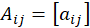 de un grafo representa a los nodos de la red y las interacciones que existen entre ellos. Los elementos de la matriz son no negativos, si existe una arista que conecta al elemento i con el j se asigna el valor de 1, de lo contrario, se asigna un 0.
Dicha matriz permite el cálculo de diversos indicadores de las características de la red. En particular, se obtuvieron el grado de entrada y salida ponderado (Barrat, 2004) y centralidad ponderada de Bonacich.
Para este caso en particular, un grafo dirigido ponderado, se aplica el método del grado ponderado (Barrat, 2004), el cual se obtiene a partir de la ecuación
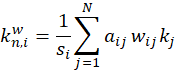
donde 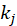 representa el grado (de entrada o salida) del nodo, 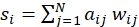 la intensidad de la relación asociada con la intensidad del conflicto 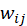.
La teoría de centralidad de Bonacich permite identificar a los sectores que tienen mayor centralidad global y los que tienen mayor poder. De acuerdo con este método, se consideran como centrales aquellos sectores que tienen muchas relaciones con otros fuertemente conectados, mientras que aquellos que tienen poder son aquellos que se relacionan con sectores poco conectados. Matemáticamente el cálculo de la centralidad se obtiene aplicando la fórmula
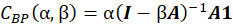
donde es el parámetro de atenuación, es la matriz de Adyacencia y es un factor de escalamiento. Para calcular la centralidad de la red se toma un valor positivo de , mientras que para calcular el poder se utiliza un valor negativo, además, se debe satisfacer la condición 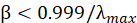.
Los programas utilizados para los distintos análisis de la red fueron Cytoscape 3.8.2, los paquetes de R igraph y RCy3 y el software UCINET (análisis de centralidad de Bonachic). La característica principal del paquete RCy3 es que permite realizar una conexión entre R y Cytoscape con el propósito de ejecutar comandos de Cytoscape desde la línea de comandos de R.
Resultados¶
Centralidad local¶
A partir de la matriz ponderada de conflictos (Tabla 2), se obtuvieron un par de representaciones que muestra el grado de conexión de entrada (Figura 1) y de salida (Figura 2) entre los nodos de la red, así como la importancia de los conflictos.
En términos del grado de entrada ponderado (Figura 1), es decir aquellos sectores que son más afectados por otros sectores, el nodo con grado de conexión Muy Alto es Conservación (5). Los nodos con grado de conexión Alto son Apicultura (4), Milpa Maya (9) y Urbano (16); mientras que Acuacultura Salobre (2), Agricultura Tecnificada (3) y Forestal (7), tienen un grado de conexión Moderado y finalmente, Minería (10), Pesca (13) y Turismo de Naturaleza (14) un grado de conexión Bajo. El resto de los nodos tiene un grado de conexión Muy bajo.
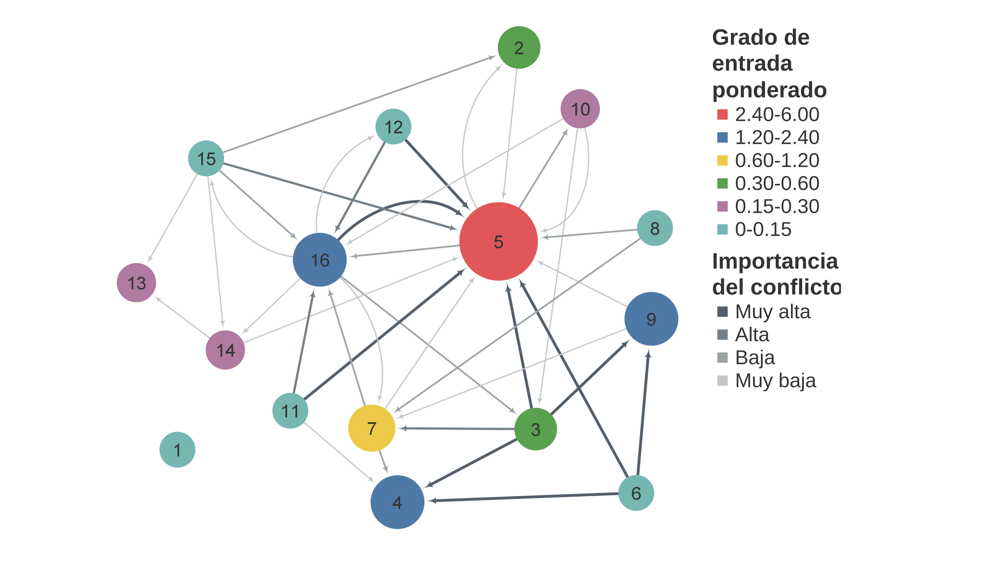
Los sectores que afectan más a otros, en términos del grado de salida ponderado, se muestran en la Figura 2. Los que cuentan con grado de conexión Muy Alto son Agricultura tecnificada (3) y Energía (6). Los nodos con grado de conexión Alto son Pecuario bovino (11), Pecuario porcino y avícola (12), Turismo de sol y playa (15) y Urbano (16); mientras que Conservación (5), Forestal (7) e Industrial (8) tienen grado de conexión Moderado y Milpa Maya (9), Minería (10) y Turismo de naturaleza (14) un grado de conexión Bajo. El resto de los sectores tiene un grado de conexión Muy bajo.
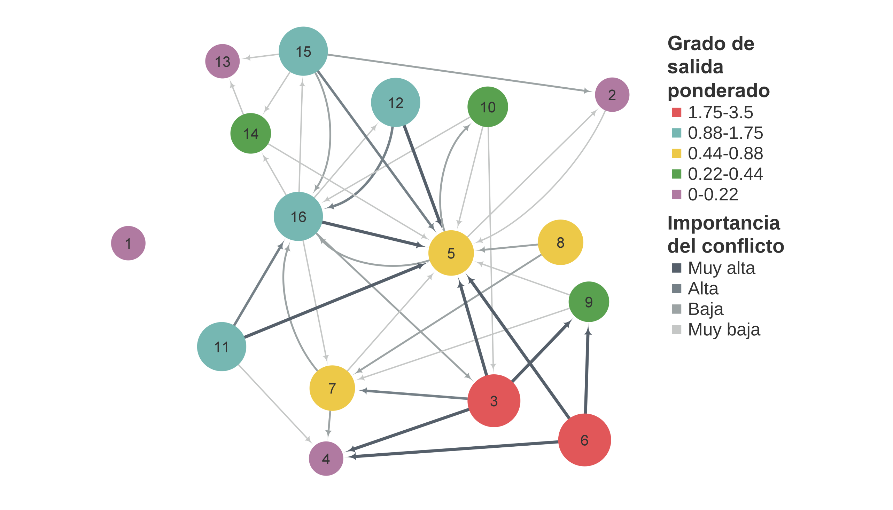
Conectividad total de la red: weighted betweenness centrality¶
La Figura 3 muestra el grado de intermediación normalizado. Los nodos con conectividad Muy alta son Urbano (16) y Conservación (5), seguidos por Forestal (7) con conectividad alta y Agricultura tecnificada (3), Minería (10), Turismo de naturaleza (14) y Turismo de sol y playa (15) con conectividad Baja. El resto de los sectores tiene conectividad Muy baja.
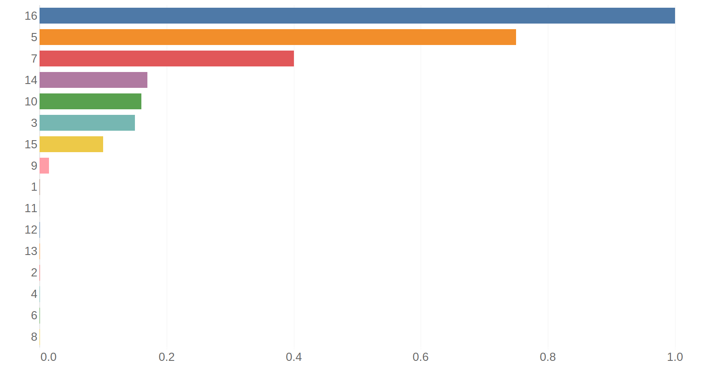
Centralidad global y poder: Bonacich¶
La teoría de centralidad de Bonacich permite identificar a los sectores que tienen mayor centralidad global y los que tienen mayor poder. De acuerdo con este método, se consideran como centrales aquellos sectores que tienen muchas relaciones con otros fuertemente conectados, mientras que aquellos que tienen poder son aquellos que se relacionan con sectores poco conectados. El análisis se realizó considerando tanto el grado de entrada (in-centrality) como el de salida (out-centrality), dada la naturaleza del grafo (ponderado y dirigido). Los resultados obtenidos por el análisis de Centralidad y poder de Bonacich (Figura 4, Figura 5) permitieron dividir a los sectores en cuatro categorías, según el valor de la mediana (Centralidad y poder altos, Centralidad baja y poder, Centralidad y poder bajos y Centralidad alta y poder bajo).
El análisis relacionado con el grado de entrada de los nodos (Figura 4) muestra que el sector con mayor centralidad y poder es Conservación (5). El segundo con mayor poder es Urbano (16), mientras que el segundo con mayor centralidad es Apicultura (4), seguido por Milpa maya (9). Los sectores con centralidad y poder bajos son Acuacultura de agua dulce (1), Energía (6), Industrial (8) y Pecuario bovino (11).
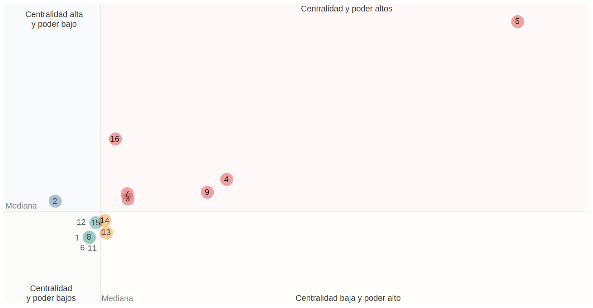
Respecto al análisis asociado con el grado de salida (Figura 5), los sectores con mayor grado de centralidad son Agricultura tecnificada (3) y Energía (6). Mientras que los sectores con más poder son Pecuario Bovino (11), Porcino Avícola (12) y Urbano (16).
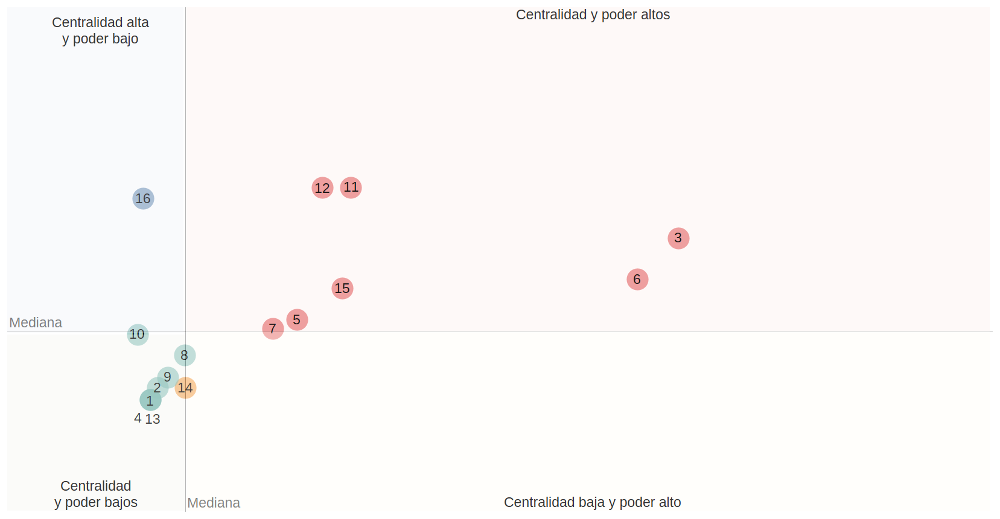
Identificación de los nodos que estructuran las relaciones intersectoriales¶
A partir de las medidas de centralidad local (grado ponderado) y global (centralidad de Bonacich) se comparó la importancia de las relaciones directas e indirectas para los sectores en la red (Figura 6, Figura 7). En términos del grado de entrada (Figura 6) el sector Conservación (5) preserva su importancia. El principal nodo que incrementó su importancia, cuando se consideran las relaciones indirectas, es Urbano (16), el cual pasa de la cuarta a la segunda posición. Los sectores Apicultura (4) y Milpa Maya (9) decrementaron su importancia (al pasar de la segunda y tercera posición, a la tercera y cuarta posición, respectivamente) con respecto a la posición que ocupaban en las relaciones directas. La importancia del resto de los sectores aumentó, destaca principalmente el sector Minería (10) que pasó de la posición 7 (relaciones directas) a la posición 3 (relaciones indirectas).
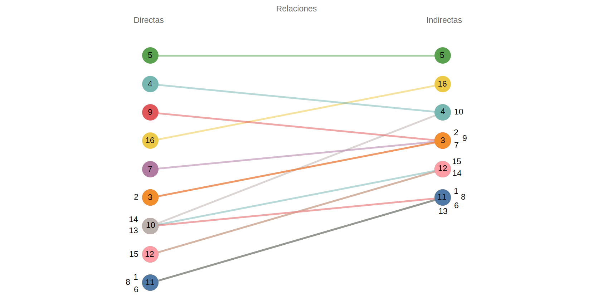
Con respecto al grado de salida de los nodos, cuando se consideran las relaciones indirectas, los sectores Agricultura tecnificada (3) y Energía (6) disminuyeron su importancia, pasando de la posición 1 y 2 a la 3 y 4, respectivamente. Por otra parte, los nodos Pecuario bovino (11) y Pecuario porcino y avícola (12) aumentaron su importancia al pasar de la posición 3 y 4 a la posición 1. El resto de los sectores prácticamente mantiene la misma importancia en ambas relaciones.
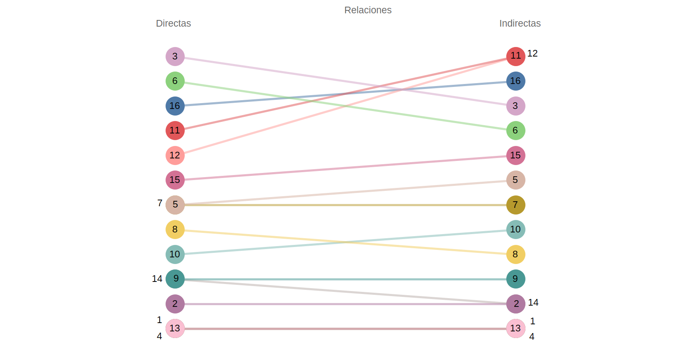
A partir de este análisis es posible identificar los nodos principales que estructuran las relaciones intersectoriales, considerando los conflictos existentes y su magnitud: El sector más destacado y que es más afectado por otros sectores (de forma directa o indirecta) es Conservación (5); en segundo lugar, destaca Urbano (16) por su alta conectividad y poder y en tercer lugar encontramos a Apicultura (4) y Milpa maya (9) y por su centralidad.
Por otro lado, considerando los sectores que más afectan a otros, de forma directa e indirecta, destacan principalmente Agricultura tecnificada (3), Energía (6), Pecuario bovino (11), Pecuario porcino y avícola (12) y Urbano (16).
Los resultados obtenidos sugieren que, en los conflictos ambientales en la región, estarán fuertemente involucrados los sectores Conservación y Urbano. Además de que es importante considerar los efectos sobre Apicultura y Milpa Maya y los que causan Agricultura tecnificada, Energía, Pecuario bovino, Pecuario porcino y avícola. En vista de la relevancia de los sectores antes mencionados, es necesario detallar cuidadosamente el papel de dichos sectores en la etapa de pronóstico.
Referencias¶
Godsil, C. y Royle, G.: Algebraic Graph Theory. Número 207 en Graduate Texts in Mathematics. Springer, 2001.
John Scott. 2000. Social Network Analysis: A Handbook, Second Edition. London: Sage Publications.
Barrat, A., Barthélémy, M., Pastor-Satorras, R. and Vespignani, A. 2004. The architecture of complex weighted networks. Proceedings of the National Academy of Sciences 101 (11): 3747–3752.
Newman, M. E. J. 2001. Scientific collaboration networks. II. Shortest paths, weighted networks, and centrality.
Physical Review E. 64 (1): 1–7. Opsahl, T., Agneessens, F. and Skvoretz, J. 2010. Node centrality in weighted networks: Generalizing degree and shortest paths. Social Networks 32 (3): 245–251.
Freeman, L.C. (1979). Centrality in Social Networks I: Conceptual Clarification. Social Networks, 1, 215-239.
Ulrik Brandes (2001) A faster algorithm for betweenness centrality, The Journal of Mathematical Sociology, 25:2, 163-177, DOI: 10.1080/0022250X.2001.9990249
Bonacich, P. (1972). ``Factoring and Weighting Approaches to Status Scores and Clique Identification.”” Journal of Mathematical Sociology, 2, 113-120.
Bonacich, P. (1987). ``Power and Centrality: A Family of Measures.”” American Journal of Sociology, 92, 1170-1182
Shannon, P., Markiel, A., Ozier, O., Baliga, N. S., Wang, J. T., Ramage, D., … Ideker, T. (2003). Cytoscape: a software environment for integrated models of biomolecular interaction networks. Genome Research, 13(11), 2498–2504.
Csardi G, Nepusz T (2006). “The igraph software package for complex network research.” InterJournal, Complex Systems, 1695. https://igraph.org.
Gustavsen JA, Pai S, Isserlin R et al. RCy3: Network biology using Cytoscape from within R [version 3; peer review: 3 approved]. F1000Research 2019, 8:1774 (https://doi.org/10.12688/f1000research.20887.3)
Borgatti, S.P., Everett, M.G. and Freeman, L.C. 2002. Ucinet 6 for Windows: Software for Social Network Analysis. Harvard, MA: Analytic Technologies.